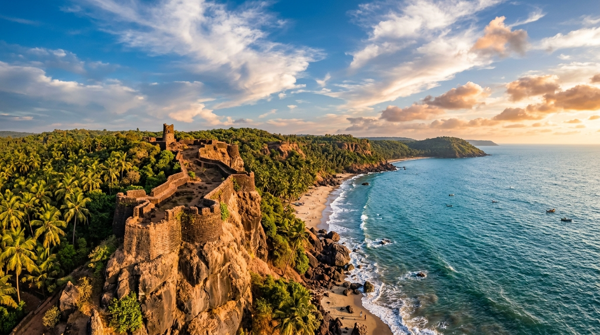
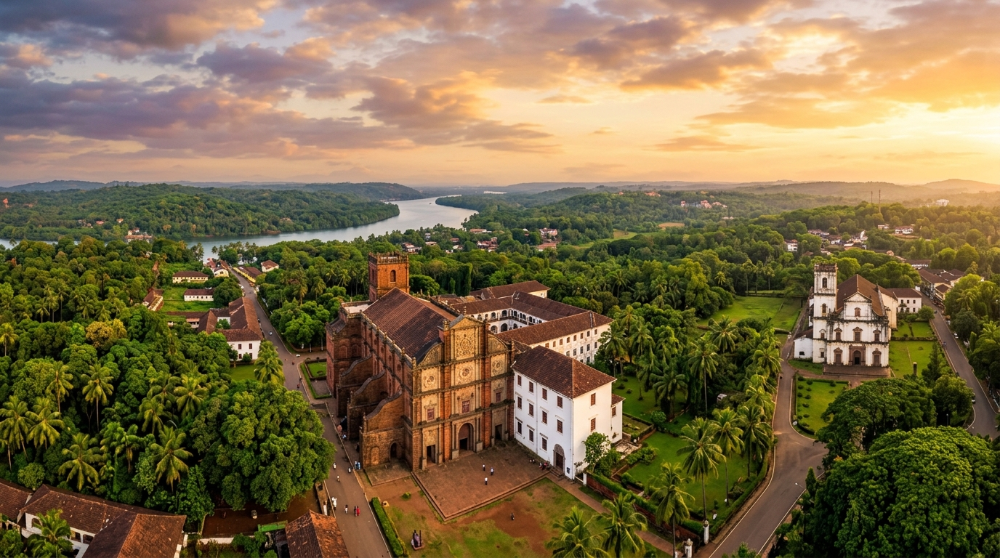
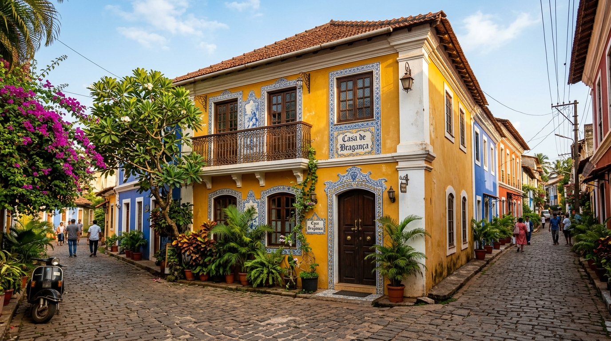
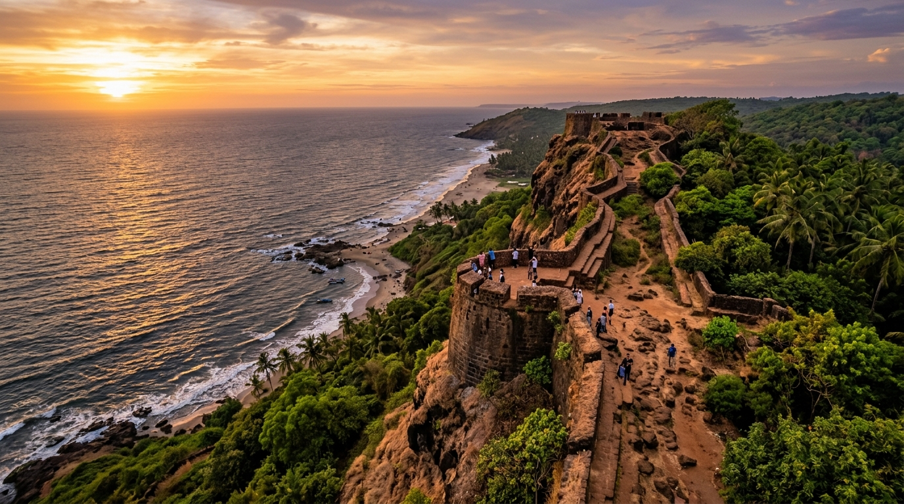
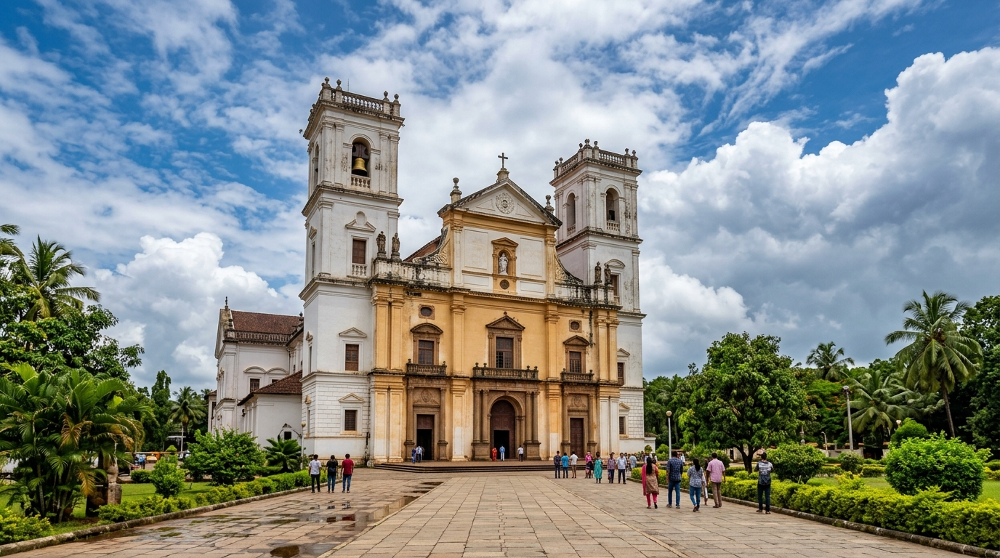
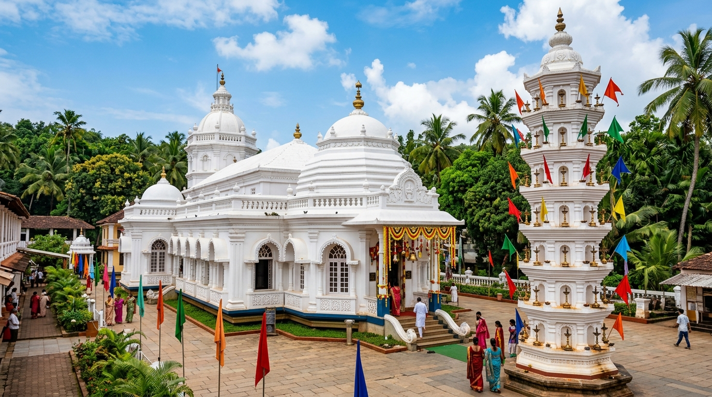

From Chapora's sunlit ramparts to the azulejo tiles of Fontainhas — HeritGoa tracks, documents, and protects every layer of Goa's irreplaceable cultural heritage.
Most tourism platforms show you the famous forts and churches. HeritGoa goes deeper — we document the crumbling house at the end of a narrow Panaji lane, the fishermen's chapel no guidebook mentions, and the oral stories that only elders still remember.
Powered by Gemini AI, our platform connects citizens, historians, authorities, and tourists in a shared mission: to see Goa's heritage not just as a relic of the past, but as a living, breathing part of the present.
Upload any photo; Gemini Vision identifies architectural styles, cultural context, and deterioration signals.
Our deterioration engine compares images across years to flag at-risk sites before they collapse.
Local voices — not just textbook facts — shape how we understand each heritage location.


A complete intelligence ecosystem — from discovery to preservation to community storytelling.
Explore all 340+ heritage sites across Goa's 12 talukas on a real-time interactive map. Filter by category, condition, and cultural significance.
Explore Map →Upload any photo. Gemini Vision analyses architectural styles, detects heritage categories, and links you to verified historical records.
Compare photos from 2018 → 2022 → 2026. AI detects paint loss, structural cracks, vegetation growth, and flags at-risk sites to authorities.
Community members contribute text, audio, and video stories. AI transcribes and moderates. Local voices preserved forever.
Citizens can report damage instantly. AI classifies severity and type, creating a direct pipeline to the heritage authority dashboard.
Upload old photographs from family albums. Link them to heritage sites and years to build a visual timeline of Goa's evolution.
Heritage content in Konkani, Marathi, and Portuguese translated to English and Hindi — without AI fabricating historical facts.
AR Reconstruction, Heritage Trails, Artisan Directory, and more.
See RoadmapFrom UNESCO World Heritage landmarks to hidden gems only locals know — every site has a story worth preserving.
📍 Old Goa, North Goa
A UNESCO World Heritage Site and one of the finest examples of Baroque architecture in India. Houses the mortal remains of St. Francis Xavier.
View Full Profile →
📍 Vagator, North Goa
Perched dramatically above Vagator Beach, this 16th-century fort offers panoramic views of the Arabian Sea. Parts of the structure show visible deterioration.
View Full Profile →
📍 Old Goa, North Goa
The largest church in Asia, built during the reign of the Portuguese Viceroy. Dedicated to St. Catherine of Alexandria and known for its Golden Bell.
View Full Profile →📍 Panaji, North Goa
Goa's famous Latin Quarter with brightly painted Portuguese-era houses, narrow winding lanes, and azulejo tile façades. A living heritage neighbourhood.
View Full Profile →
📍 Priol, South Goa
One of Goa's most visited temples, dedicated to Lord Mangesh (Shiva). Known for its distinctive seven-storeyed lamp tower (deepastambha) and unique blend of Portuguese and Hindu architecture.
View Full Profile →Explore the complete interactive map of Goa's documented heritage sites.
View All on MapOur AI deterioration engine compares photographs of the same site uploaded across different years. It identifies subtle and severe changes — alerting preservation authorities before irreversible damage occurs.
Stories submitted by Goa's residents, verified by the community, preserved by HeritGoa.
"My grandfather used to say the old well behind the Fontainhas chapel was where Portuguese soldiers stored their maps. We children were forbidden from playing near it. The well is gone now, filled in during the 1990s road widening."
"The Tambdi Surla temple is the only surviving Kadamba-era temple in Goa. Built entirely of basalt rock, it predates the Portuguese arrival by at least 300 years. Its isolation in the forest is what saved it from destruction."
"Chapora Fort — we called it our fort. In the 1970s, there was still a freshwater spring inside the walls. Our fathers drank from it. Today it's dry, and the walls are breaking piece by piece every monsoon."
Your family memories, local legends, and lived experiences are irreplaceable historical data.
Snap any old building, artifact, or architectural detail in Goa. Our Gemini Vision AI analyses the image, identifies possible architectural styles, and connects you to verified historical records in our database.
Drag & drop or click to upload
JPG, PNG, HEIC · Max 10MB
Whether you're a historian, a tourist, a local resident, or a concerned citizen — you have a role to play in keeping Goa's heritage alive.